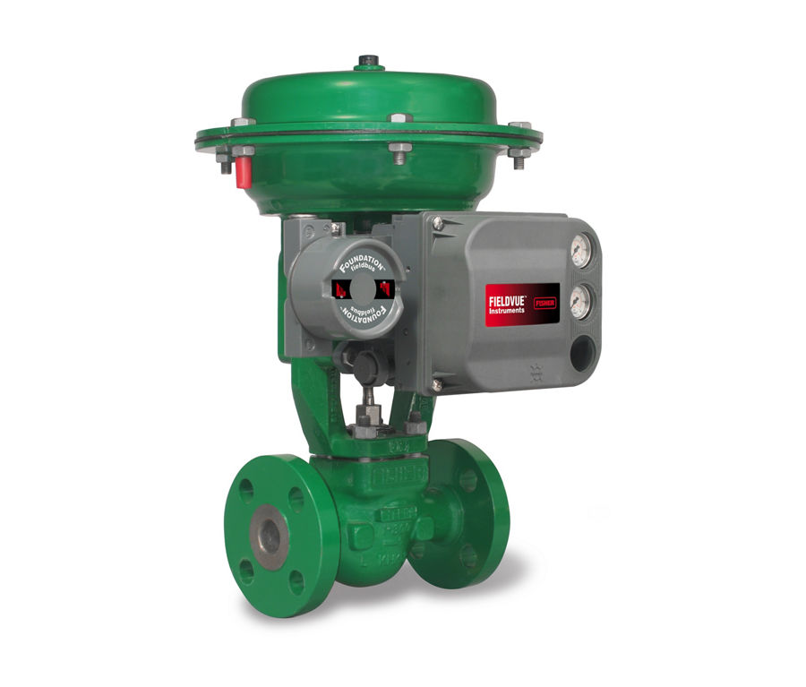
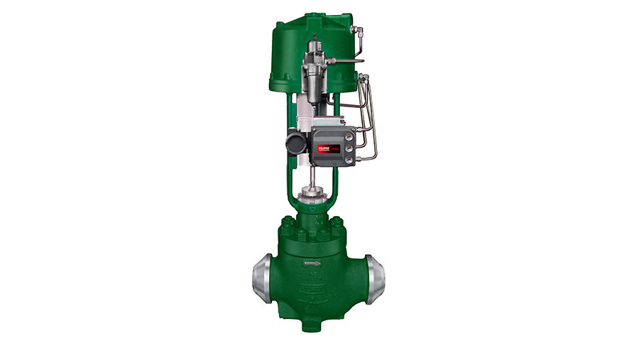
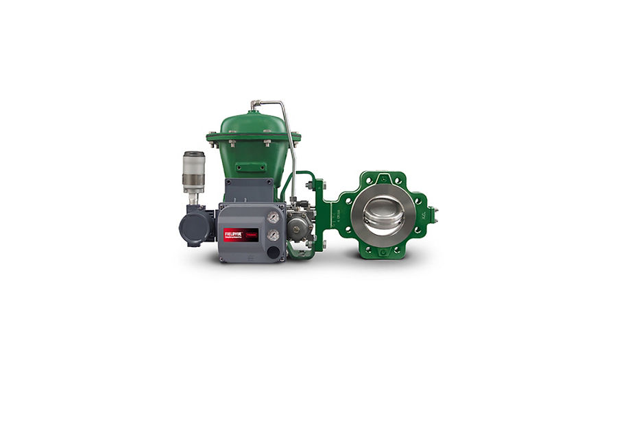
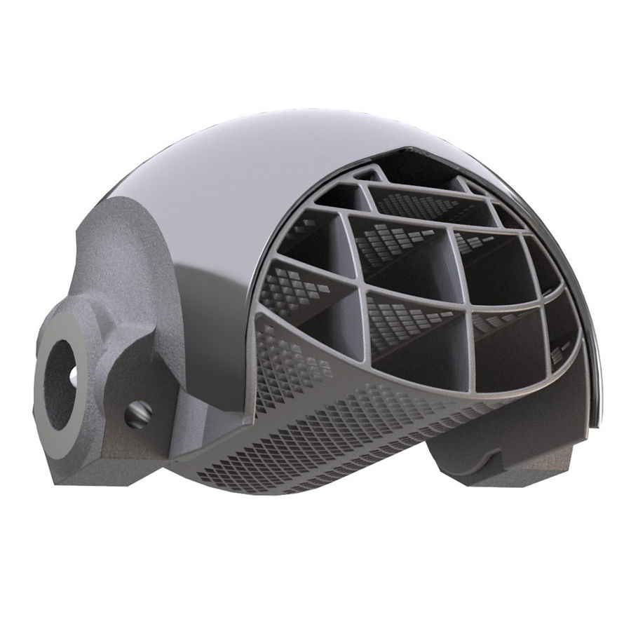
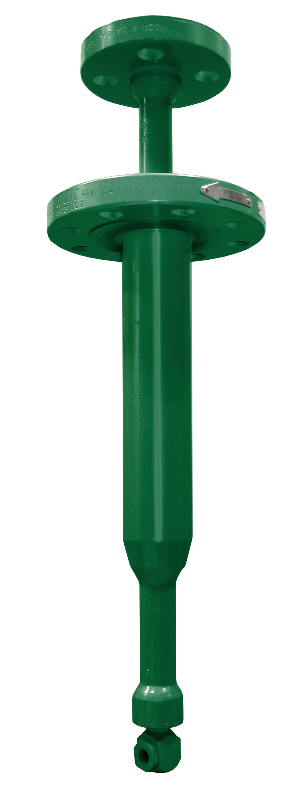
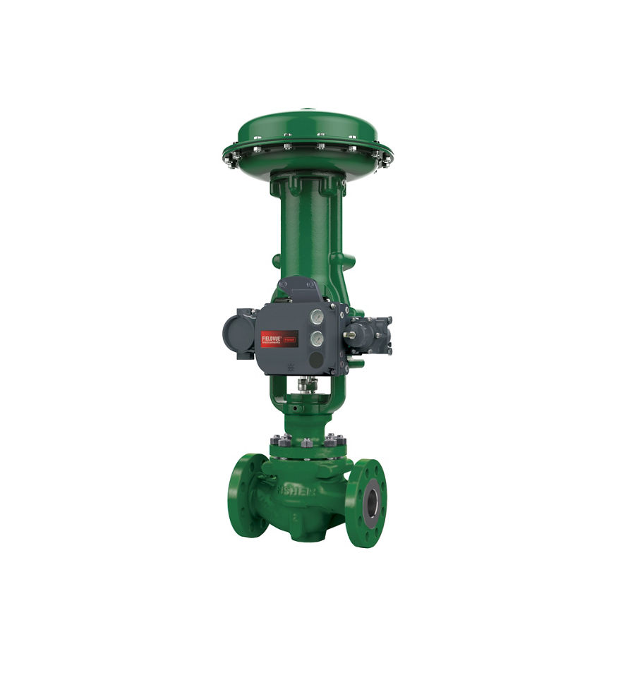
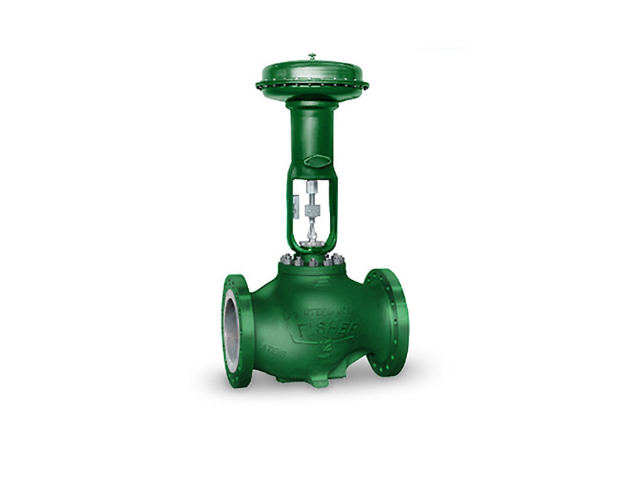
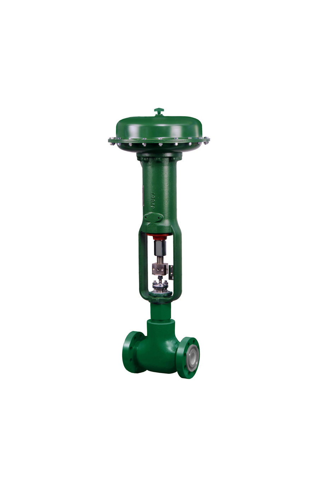
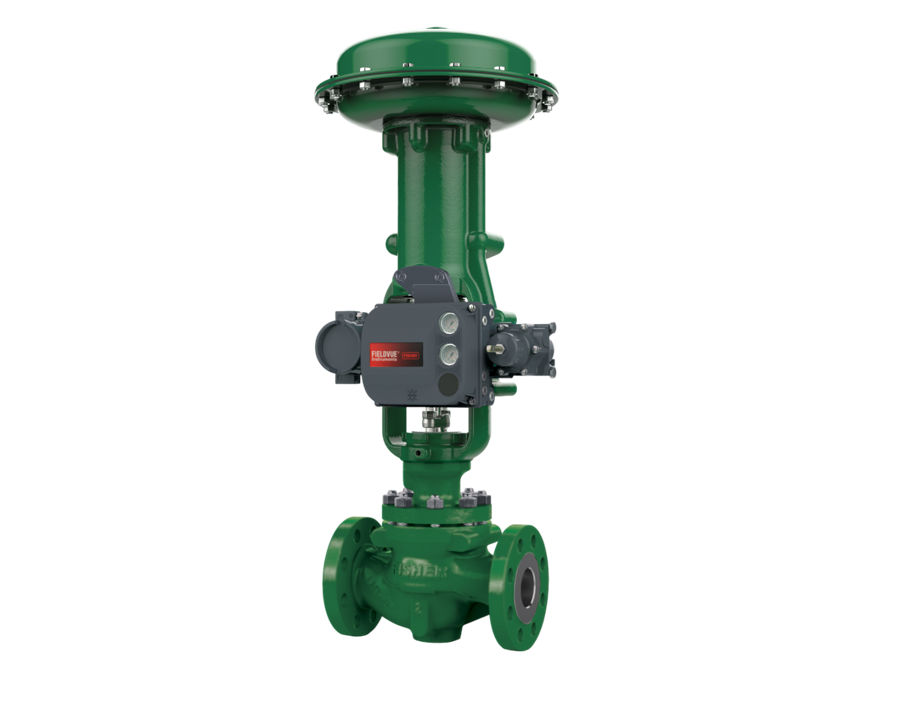
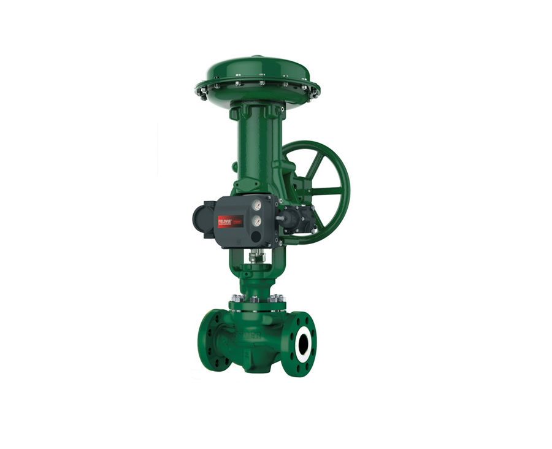

Van cầu điều khiển (Globe)
Van cầu (globe) là dòng van điều khiển phổ biến nhất của Fisher – easy-e ET/EZ/EW, GX, HP, Baumann – cho điều tiết lưu lượng chính xác từ nước, hơi đến khí và…
Van điều khiển Fisher dạng cầu (easy-e, GX, EH, HP), van góc, van 3 ngã, van xoay Vee-Ball, V500, van bướm hiệu suất cao và van cho điều kiện khắc nghiệt – chống xâm thực, giảm ồn, desuperheater cho hơi.

Van cầu (globe) là dòng van điều khiển phổ biến nhất của Fisher – easy-e ET/EZ/EW, GX, HP, Baumann – cho điều tiết lưu lượng chính xác từ nước, hơi đến khí và…

Van góc Fisher (EH, HP, D/DA, FB) cho dòng chảy có hạt rắn, flashing, áp chênh cao như choke giếng dầu, xả lỏng bình tách và nước cấp lò hơi.

Van điều khiển 3 ngã Fisher (GX 3-way, YD/YS, Baumann 24003) để trộn hoặc chia dòng trong trao đổi nhiệt và hệ thống nhiệt.

Van bi phân đoạn Vee-Ball V150/V300, van nút lệch tâm V500/CV500 và các van xoay Fisher cho lưu chất bẩn, sợi, bùn và dải điều tiết rộng.

Van bướm hiệu suất cao Fisher 8580, 8560, Control-Disk, A11 cho đường ống lớn, điều tiết lưu lượng lớn với chi phí và trọng lượng thấp.

Van và trim Fisher cho điều kiện khắc nghiệt: Cavitrol chống xâm thực, WhisperFlo/Whisper Trim giảm ồn, NotchFlo, DST cho áp chênh rất cao.

Desuperheater Fisher (DSA, DMA, TBX) và bộ khuếch tán để điều chỉnh nhiệt độ hơi quá nhiệt trong nhà máy điện, lò hơi và hệ thống hơi công nghiệp.
Van điều khiển + actuator tích hợp, DN25–100, PN10–40/CL150–300; có bản 3 ngã cho điều khiển nhiệt độ.

Van cầu post-guided cho lưu chất nhớt, bẩn; NPS 1/2–4, tới CL600, Class IV–VI.

Van cầu đầu nối mở rộng tới NPS 12x8, CL150–900; EWD/EWS/EWT, hỗ trợ trim Cavitrol III, Whisper.
Van điều khiển áp cao tới CL2500, cage khoan lỗ; EHD/EHS/EHT và bản góc EHA.

Van cầu/góc áp cao cho dầu khí, lưu chất có cát; trim gốm, tungsten carbide; kết nối API/ASME.

Van cầu cân bằng, dẫn hướng cage; Class V/VI; NPS 1–8, tới CL600; biến thể EA, EAT, ETR.

Họ van easy-e: ED/EAD/EDR trim cân bằng, kín kim loại; Class IV/V tới 593 °C; nhiều trim đặc biệt.
Van bướm điều khiển đặc tính equal %, dải điều tiết rộng; NPS 2–24, CL150/300, Class VI.
Van bi chữ V (segmented ball) CL150; đặc tính equal % cải tiến; NACE; bản slurry V150S.
Trụ sở TP. Hồ Chí Minh và văn phòng Vũng Tàu đều tiếp nhận RFQ, tư vấn cấu hình và bàn giao bộ chứng từ CO/CQ; bảo hành chính hãng 12 tháng kể từ ngày giao hàng. Yêu cầu gửi trong giờ làm việc được phản hồi trong cùng ngày; giao hàng toàn quốc.
150/41 Nguyễn Cư Trinh, P. Cầu Ông Lãnh
51 Lê Văn Lộc, P. Vũng Tàu